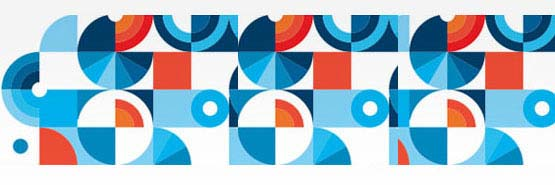

2015年5月19日，经李克强总理签批，国务院正式颁布了我国制造强国战略的第一个十年行动纲领——《中国制造2025》。
制造业是国民经济的主体，是科技创新的主战场，是立国之本、兴国之器、强国之基。当前，全球制造业发展格局和我国经济发展环境发生着重大变化，我们必须紧紧抓住当前难得的战略机遇。而《中国制造2025》的出台，正好有力的推动了云计算、大数据、互联网、移动互联网等新技术、新应用、新模式与制造业的进一步融合创新，这是我国制造业实现创新驱动、智能转型、工业强基、绿色发展的重要路径，是加快由制造大国向制造强国转变、工业大国向工业强国转变的必由之路。
“中国制造2025”不等同于“德国工业4.0”，中国和德国在国情、制造业技术水平等方面有很大差异，这也决定了中国制造业转型升级不能照搬外国经验，要走出中国特色。
国情不同决定了实现路径不同。德国制造业以中小企业和家族企业居多，创新活力较强，整体的创新体系以及知识产权等相关法律体系已很完善。而中国制造业多种所有制、大中小型各类企业都有。相比德国制造业，中国制造业升级是更宏观长远也更复杂的战略规划，需要重视大众创业、万众创新的力量，让各种经济主体开放融合，同台共舞，共同发力，也更需要重视法律体系、创新体系的配套完善。
阶段不同决定了战略重点不同。中国和德国制造业基础差异很大，不在同一起点上。德国是老牌的制造业强国，而中国目前是全球第一制造业大国，却大而不强，在制造业基础材料、基础工艺和产业技术等基础领域创新力和保障力还不够，仍处于全球价值链中低端。德国已普遍处于从工业3.0向4.0过渡的阶段，中国制造业发展水平参差不齐，有的尚处在工业2.0阶段，部分达到3.0水平，所以“中国制造业2025”的重点既需要谋划工业4.0、抢占技术高地，还需要弥补基础不足和历史欠账，特别是要加快淘汰落后产能和化解过剩产能，促使其尽快提升，实现跨越式发展。
着眼点不同决定了发展方式不同。德国制造业已经有良好的技术基础，“德国工业4.0”也因此更重视硬件和技术的升级，对智能化工厂等微观和技术层面颇为看重。而对于中国制造业来说，数字化、智能化固然不可或缺，但也更重视在宏观层面将我国部分领先的互联网技术、应用与制造业变革结合起来，这也正是今年《政府工作报告》所提出的“互联网+”对于制造业的要义所在。因此，“中国制造2025”应注重与制定“互联网+”行动计划相匹配，推动移动互联网、云计算、大数据、IoT等与现代制造业结合，这是“中国制造2025”更加宽广的发展方向和提升空间。

而随着移动互联网、云计算、大数据、IoT等与现代制造业深入融合，制造业的生产方式在发生着巨大的变化，制造技术、制造形态、制造模式、要素组合模式等也在发生着重大的变革。在新的技术革命和产业变革的大格局下，由软件、硬件、应用和服务构成的生态体系竞争正在成为竞争的关键。
因此，在实施《中国制造2025》进程中，我们既要重视智能制造、高端装备、关键技术等核心环节的突破，又要重视基于自主核心技术和关键产品的智能制造产业生态体系的建设。
新的智能制造生态体系下，工业软件迎来了重要的发展机遇期。智能制造包含了研发设计、市场营销、生产制造、企业管理、供应物流、市场营销、售后服务等各个环节的信息化、智能化、自动化，无论是制造过程、制造流程、企业管理、客户服务的智能化，还是工业产品、重大装备的智能化，都离不开工业软件，工业软件在智能制造领域具有基础性、战略性、先导性的地位。
从某种意义上说“软件定义工业”，即在新兴的网络环境下，采用软件工具和平台，利用云计算、IoT、移动互联网、工业互联网等新一代信息技术，软件将重新定义工业产品的客户需求、设计研发、生产制造、企业管理、营销物流、售后服务等全过程，形成新的智能制造生态体系，推动商业模式不断创新。